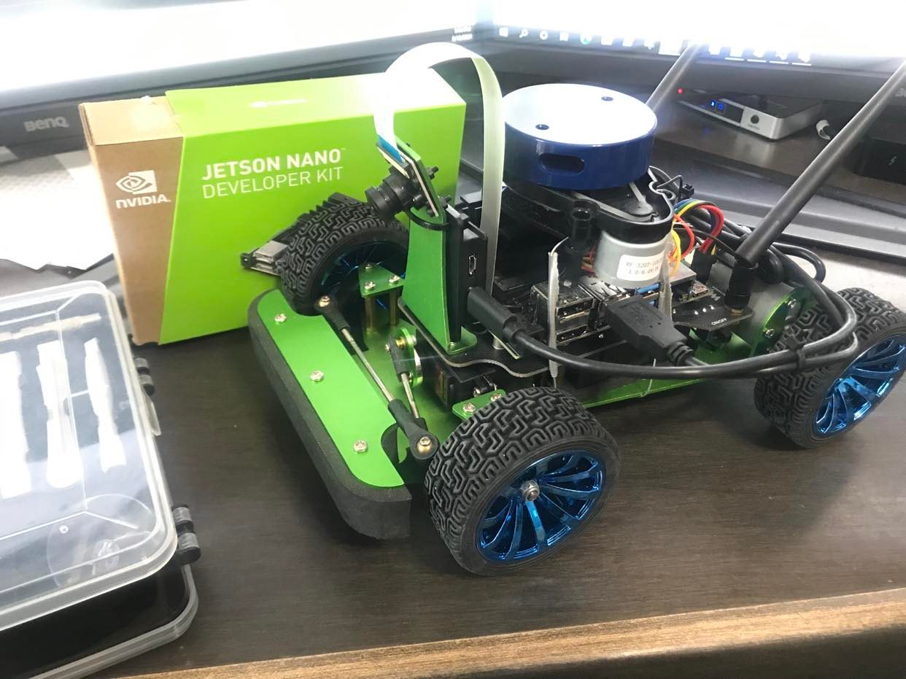

SLAM is an algorithm used in robotics to map an unknown environment while also localizing its position within said map. There are many variants of SLAM for different modalities, including monocular SLAM, RGB-D SLAM, stereo SLAM, etc. In this project, I opted to implement occupancy grid SLAM, I’ll touch on this a bit more later.
Hardware
From the hardware side, I bought a 2D, 360-degree Lidar and strapped it to the back of a small robot chassis I found on Amazon. Everything was tied together with the small, but powerful, Jetson Nano computer. The robot was powered by two servos in the rear of the chassis and was be controlled from the software side using the Adafruit ServoKit Python API.

Image Description: The assembled robot.
Software
Lidar Odometry
In order to map a robot’s environment, we must first have an understanding of its relative position and orientation so we can align and merge the point clouds appropriately. This is called “odometry” - finding the relative motion between consecutive frames, and it allows us to have an understanding of the robot’s trajectory as it moves throughout its environment. I opted to use one of the more common techniques for Lidar odometry called Iterative Closest Point, a method that aims to find the transformation which aligns a source point cloud with a target point cloud as closely as possible. This algorithm iteratively minimizes some error function using gradient descent.
Occupancy Grid
We can model a robot’s environment using a discrete grid representation, where each grid cell represents a distance bucket in the map. Cells can be in one of two states, either occupied or not occupied, where an occupied cell is one that contains an object or boundary and stops Lidar rays from extending beyond it. In every frame, we predict whether the cells in the current lidar FOV are occupied or empty, and we update our map accordingly. This method provides robustness to object movement and sensor noise.